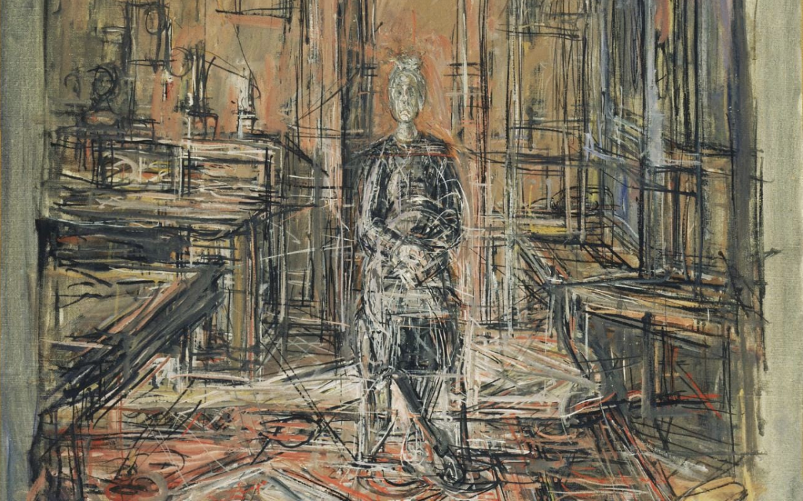

Before starting, I should mention that the videos posted below are for pedagogical purposes only.
Introduction
In the recent weeks, I’ve been developing a series of improvised etudes scored for dancer and musicians. The objectives of these etudes are to create provocative situations for interdisciplinary improvisation, and to research how different relationships between movement and sound can be manifested. These relationships are communicated through text and some simple diagrams, and they’re meant to be short (< 5 mins) and memorized in order to enable direct focus between the musicians and the dancer, thereby eliminating any sort of physical barrier between the performers.
In each etude, I indicate how the musicians and dancer should interpret each other. The instructions provided in these etudes are not meant to be followed in an exact or literal sense, but rather interpreted in a fallible way by which to produce compelling situations. They’re meant to direct the psychological aspect of the improvisers. As a performance practice, the musicians and dancer should aim to function as one ensemble, neither holding higher importance, all equally responsible for both the visual and audible aspects of the performance space.
Regarding sonic and movement material, it’s important to state that these etudes were written for performers who are active practitioners of free improvisation. I can't possibly begin to define what free improvisation means here, but for starters, reference the writings of George Lewis and Derek Bailey. English musician Tim Hodgkinson put it nicely when he wrote, improvisation “invite[s] your ear to start from scratch at every moment, to consider the possible relationships between one sound and another as being continuously modified and rotated about varied axes of connection.”
This being said, as a composer and improviser, I have my own musical language and aesthetic concerns regarding movement and sound. But rather than give the performers musical or choreographic material, I provided metaphorical examples from other mediums for inspiration, specifically paintings and sculptures by artists Alberto Giacometti, Francis Bacon, and early Piet Mondrian which demonstrate an aesthetic of uncanny and grotesque beauty. Granted, who's to say how this visual art translates into music, but to me, it communicates a message of distortion, harshness, swooping curves and jagged lines, violence and bleakness. Maybe the thick Parisian clouds are getting to me. Perhaps I need more vitamin D...

Anyways, all this being said, these etudes are experimental. They serve as a tool for myself to research the interactions between movement and sound, between dancers and musicians, between different disciplines of improvisation. They may generate music- or movement-based material for future works, and they teach me how performers respond to various approaches to communication.
This past week, I organized a short session to test out a few of these etudes, inviting three local improvising musicians (a violinist, bandoneonist, and baritone saxophonist) and a dancer into the studio. These musicians have never played together before, nor with the dancer. Thus, it should be noted that none of these artists were familiar with the aesthetic practices of their colleagues. As I learned during this session, even though the instructions for each etude are brief, they absolutely require face-to-face rapport and dramaturgical direction with the ensemble. We played through most of the etudes twice, discussing in detail how each type of interpretation and reaction could manifest, what works and what doesn't, and how to make a more compelling situation. Of the many runs we had, I've selected 5 to show here. Over the next few entries, I will present these etudes and briefly analyse their implementations, as well as present pitfalls, areas of improvement, and future investigation.
Nucleus and extremities
The premise of this etude is that the ensemble begins with a “baseline behavior”, or in other words, a theme. Each member of the ensemble is responsible for their own contribution to this behavior, and at the same time making it collectively cohesive. Once this is created, each performer is asked to independently and periodically stray away from this behavior, to pivot or transition into an episode (new material contrasting from the baseline behavior). Once the performers accomplishes this drift, they are to re-incorporate themselves into the baseline behavior. Of course, in the time that the performer spent with the new material, this baseline behavior will have shifted away from its original identity, and the performer will find themselves adjusting to a slightly-changed performance environment. You never step into the same river twice.
As you can see, the bandoneonist starts with fast flourishes and long notes in the mid-high register, the violinist plays slow small-interval glissandi on the G string, the saxophonist plays fast repeated descending runs, and the dancer slowly paces in a small circle. This is the baseline behavior that they performers spontaneously created. As the performers leave and return to this behavior, we hear scattered episodes, micro-variations, and fleeting memories of previous material. The behavior is being continuously developed and reshaped by the impact that each drift has on the actions of the group.
At 0:11, the first episode is taken by the dancer, lowering her vertical frame and dipping towards the floor, provoking the saxophonist to drop into her own low register. The initial behavior is held by the bandoneonist and violinist, and the global material is relatively unchanged, except that the dancer’s circular path is more downward, perhaps residue of her first episode.
Around 0:29, the entire group erupts spontaneously into an episode, and by the time the baseline behavior is rediscovered (0:39), it’s in an entirely new state, a twisted memory of what came before. Versions of the developed baseline behavior appear again at 0:49.
I think this etude works for a few of reasons. The obvious one being that it has the perception of a twisted adaptation of a classic theme-and-variations form. We have a theme and episodes. The emergence of the episodes are spontaneous (of course, the performers unconsciously react to each other), and they contribute to the continuous reconfiguration of the theme. Thus, the audience member can easily trace a line linking various moments in the performance, while constantly being distracted by unexpected twists and turns of familiar material.
Push/Pull v2
The instructions for this etude are simple, though frustratingly ambiguous: groups push and pull on each other, and react to the forces being exerted upon them. The groups, in this case, are the musicians and the dancer. Though each performer interprets and executes the instructions independently, the musicians are not meant to react explicitly to each other, only to the dancer.
A “push” or “pull” in this case isn’t exclusively linked to a gesture’s aggressive or passive characteristics, but more the intent behind it. What makes a gesture provocative? How is a push different from a pull? Does one repel and the other attract? Is one luring and the other repulsive? And how does one react to these forces?
An analysis of etude this elusive simply because there’s no clear event marking a pull or a push. Unlike “Nucleus and extremities”, where the improvisation grows out of a baseline behavior, there is no attempt in “Push/Pull v2” to preserve the unity of material. This being said, this etude functions mainly as a psychological kernel for the performers, not to sculpt the material itself.
The opening behavior of the musicians stays relatively constant, while the dancer’s material is a bit more exploratory. This could be interpreted as the musicians adopting a more passive (pulling?) behavior, giving freedom to the dancer to take the foreground (push?). At 0:26, the music changes as the saxophonist holds a note, which the bandoneonist then mimics. The violinist changes his playing from col legno battuto jeté articulations (playing with the wooden side of the bow, throwing it against the string, and letting it bounce) to col legno tratto (bowing normally using the wooden side of the bow). The dancer during this time approaches a vertical pike position, moving at a much slower pace than before. As the dancer picks up momentum, the musical texture becomes more saturated. The saxophonist dips into the lower buzzy register, the bandoneon holds dissonant clusters, and the violinist plays sustained scratch tones (using high amounts of bow pressure to achieve a distorted sound quality). This behavior changes around 1:07 when the saxophonist transitions to into a higher register, the violinist holds a mid-register scratch tone, and the dancer’s movement slow down, focusing only on her right hand.
When evaluating the success of this etude, there are a few different approaches. First, does it work as a performance? Also, are the performers honoring their instructions, and does the performance reflect those instructions? To address the first question (which I will explain further in detail in a later entry), I think this etude works, but not without its flaws. Personally, I could endlessly tweak notes, rhythms, movements, and timing. I could write it all down, and give it to the ensemble to memorize and perform. This would take me weeks, and it would take them weeks to learn/memorize. Yet, in the performance here, there is a sense of cohesiveness and spontaneity within the ensemble that I would not want to sacrifice (which I think would be the case if the musicians were preoccupied counting complex rhythmic patterns). If I had more time to work with these musicians, we could “save” an improvisation and sculpt it. Perhaps keep the loose 3-part form, begin to explicitly shape the harmonic trajectory, fine tune the choreography a bit...
For the second and third question, I can only guess the intentions of the performers. Some of the etudes we tried were simply too demanding psychologically or confusing to be executed in real time (will expand on this in a later entry). I can never be too sure how a vague instruction will be interpreted through an artistic action (hence, the need to do this research). I can only rely on what performers tell me.
Regarding whether or not the performance reflects these instructions, I'm a bit undecided. "Nucleus and extremities" is set up in a way that intends a loose structure, while "Push/Pull" is not. I’m not interested in these etudes being completely demonstrative or didactic. It's important to me that the audience perceives relationships between the movement and sound, though without being spoon-fed. But rather than "doing math" during the performance, or actively trying to reverse-engineer the etude, I would simply want an audience simply to take in the experience as captivating. The idea of encoding a concept into a music/dance performance and having the audience accurately decode it seems a bit boring. Rather, I believe it’s more interesting to use these ambiguous instructions as catalysts for discovery - to arrive at something collaboratively through varied interpretations of a prompt. If the performers are engaged collectively, I’m confident that patterns will emerge (a great word for this is apophenia). These patterns may not necessarily be the instructions specified in the score, but perhaps it’s more interesting if the viewer finds their own interpretation of the performance.
Special thanks to Alice Boivin, dance; Tristan Macé, bandoneon; Morgane Carnet, baritone saxophone; and Adrian Delmer, violin. Also, thanks to Ircam for providing the studio space.
In the next entry, I will present and analyze two more etudes.
In the third and final entry (of this short series) I’ll try to explain what it all means, future motivations and artistic goals, and to proceed from here.